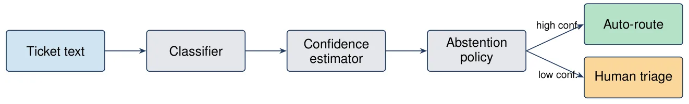
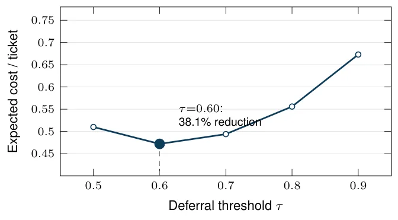
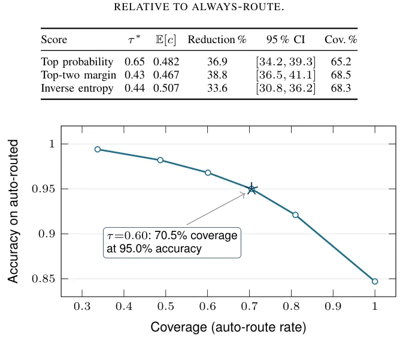

O Problema Oculto da Triagem de TI
Empresas processam dezenas de milhares de tickets de suporte de TI por mês. O custo para resolver um ticket de voz é, em média, de US$ 17,19 na América do Norte, enquanto tickets presenciais chegam a US$ 37,52. O roteamento automático promete reduzir esses custos, mas a estrutura de custos é assimétrica: enviar um ticket para a fila correta é quase gratuito; enviá-lo para um triador humano tem um custo moderado; enviá-lo para a fila errada é muito mais caro devido à latência de transferência, trabalho duplicado e violação de níveis de serviço.
Dois fatores tornam essa lacuna crítica. Primeiro, modelos de linguagem grandes (LLMs) podem ser usados como classificadores de texto via prompting zero-shot ou few-shot, potencialmente eliminando a necessidade de treinamento específico. Segundo, classificadores neurais modernos, incluindo LLMs, são conhecidos por serem mal calibrados, produzindo valores de alta confiança independentemente da precisão real.
A questão operacional concreta é: um LLM promptado deve ser autorizado a rotear tickets de IT automaticamente? E, se sim, sob quais políticas de abstenção? Este trabalho avalia a abstenção consciente de custo não como uma maneira de melhorar um classificador, mas como um teste empírico de prontidão sob suposições declaradas.
A Ideia: Abstenção como Guardrail
A proposta central é tratar a abstenção como uma avaliação de prontidão condicional ao custo. Em vez de buscar um classificador perfeito, o sistema seleciona uma política de roteamento em dados de calibração sob custos explícitos e avalia essa política congelada em dados de teste não vistos. O objetivo não é aumentar a acurácia bruta, mas minimizar o custo esperado por ticket.
O problema é formalizado como uma decisão $d: X \rightarrow Y \cup \{\bot\}$, onde $X$ é o texto do ticket, $Y$ é o conjunto de filas de destino e $\bot$ representa a abstenção (encaminhamento para humano). O custo esperado por ticket é dado por $E[c] = P(\bot)c_{triage} + P(correct, \neg \bot)c_{ok} + P(wrong, \neg \bot)c_{wrong}$.
Os autores utilizam um modelo de custo ilustrativo $(c_{ok}, c_{triage}, c_{wrong}) = (0, 1, 5)$. Essa proporção codifica a ordem qualitativa que motiva a abstenção: um roteamento errado é mais custoso que um triagem humana porque ainda incorre no triage após um atraso de handoff e retrabalho. Um roteamento correto é efetivamente gratuito. É crucial notar que os valores são ilustrativos, não calibrados a uma organização específica, e todas as conclusões são condicionais a essa suposição.
Configuração Experimental e Preditores
A avaliação ocorre no corpus público de Classificação de Tickets de Serviço de TI, contendo 47.837 tickets em oito categorias. Os autores comparam quatro classificadores não-LLM treinados contra quatro grandes modelos de linguagem sob condições de zero- e few-shot prompting.
Os baseline não-LLM incluem TF-IDF com Regressão Logística (headline), SVM linear, Random Forest e DistilBERT fine-tuned. O DistilBERT atinge a maior acurácia entre os não-LLM (0.877 no teste completo), demonstrando a vantagem do treinamento supervisionado sobre o prompt engineering neste cenário.
Os LLMs avaliados são GPT-4o-mini, Claude Haiku 4.5, Qwen2.5-7B-Instruct e Llama-3-8B-Instruct-Lite. Os prompts são estruturados para retornar JSON com label e confiança. As variantes few-shot incluem três exemplares por classe, desenhados apenas do split de treinamento. Modelos proprietários foram consultados via API em 22 de maio de 2026, enquanto os open-weights usaram endpoints Together AI. Precisão dos pesos não foi verificada independentemente.

Resultados: A Lacuna de Performance
Os resultados de performance base revelam uma lacuna significativa. Entre os não-LLM, o DistilBERT atinge 0.877 de acurácia e 0.874 de macro-F1. O SVM linear com TF-IDF segue com 0.863/0.864. Já o melhor LLM promptado, Claude Haiku 4.5 com few-shot, alcança apenas 0.477/0.459. No subset estratificado de 1.000 tickets, a diferença se mantém: DistilBERT 0.879 versus Haiku 0.477.
Essa lacuna não é puramente de capacidade, mas de regime de informação. Os modelos treinados aprendem a taxonomia de 33.486 tickets rotulados, enquanto os LLMs recebem apenas nomes de labels e, no máximo, 24 exemplos sem definições naturais das categorias. Labels ambíguas como 'Miscellaneous' ou 'Administrative rights' tornam essa distinção material.
É importante notar que o few-shot prompting ajuda três dos quatro LLMs, mas prejudica o Llama-3-8B-Instruct-Lite em 12.3 pontos percentuais. Inspeção das saídas cruas mostra que o modelo frequentemente emite um preâmbulo conversacional que consome o orçamento de saída antes do JSON, gerando uma taxa de erro de parse de 15.1%.
Calibração vs. Discriminação
Uma descoberta crítica diz respeito à utilidade do sinal de confiança dos LLMs. Todos os LLMs promptados são excessivamente confiantes: o ECE (Expected Calibration Error) bruto varia de 0.332 a 0.594. O GPT-4o-mini few-shot, por exemplo, atribui confiança 1.000 a todos os tickets, apesar de ter apenas 0.459 de acurácia.
A aplicação de recalibração isotônica reduz o ECE dos LLMs para [0.014, 0.049], uma redução relativa de 86-98%. No entanto, esse resultado não deve ser lido como melhoria na capacidade de erro. A regressão isotônica é monótona e altera o AUROC de correção em no máximo 0.007. O caso limite é o GPT-4o-mini: a confiança bruta constante 1.000 é mapeada para a constante 0.480, e tanto o AUROC quanto o AURC permanecem em 0.500 e 0.541. A recalibração corrige o nível de probabilidade mapeando um score não-discriminativo para a acurácia base, mas não cria informação ausente do score.
A concordância entre modelos pode carregar sinal de ranking, mas o pool de votantes importa. Um pool misto (incluindo o classificador supervisionado) tem melhor AUROC que um pool apenas de LLMs, mas isso importa informação supervisionada e requer múltiplas avaliações de preditores, aumentando custo e latência.

Redução de Custo com Abstenção
O resultado principal do framework de abstenção é ilustrado no baseline TF-IDF + Regressão Logística. Sob o modelo de custo $(0, 1, 5)$, a seleção de um limiar de confiança nos dados de calibração reduz o custo de teste de 0.763 para 0.472, uma redução relativa de 38.1% (IC 95% [35.7%, 40.4%]). Isso ocorre enquanto a taxa de roteamentos errados cai de 15.3% para 3.5%.
A Figura 3 mostra a curva de custo de teste para diferentes limiares. O ponto selecionado pela calibração ($\tau = 0.60$) oferece o equilíbrio ótimo sob as suposições do modelo. Políticas congeladas selecionadas na calibração superam tanto a política de sempre rotear quanto a de sempre adiar em 14 dos 16 cenários analisados em uma análise post-hoc de parâmetros de custo.
A análise de sensibilidade pós-hoc cruza $c_{triage} \in \{0.5, 1, 1.5, 2\}$ com $c_{wrong} \in \{2, 5, 10, 20\}$, mantendo $c_{ok}=0$. O par $(2, 2)$ representa a fronteira de custo igual; os outros 15 pares mantêm $c_{wrong} > c_{triage}$. Os benefícios qualitativos da abstenção não se confinam ao modelo $(0, 1, 5)$, embora haja uma leve reversão em held-out test para alguns parâmetros, reforçando a necessidade de congelar a escolha da política antes da avaliação de teste.

O Colapso dos LLMs sob Abstenção
Enquanto os modelos clássicos beneficiam-se da abstenção, os LLMs promptados mostram comportamento diferente. No limiar analítico de break-even de probabilidade 0.80, sete configurações promptadas abdicam de todos os tickets. O Haiku few-shot roteia apenas 19 dos 1.000 tickets.
Isso não significa que os LLMs são inúteis, mas que seus sinais de confiança são tão fracos ou não discriminativos que, sob um custo de erro alto, a política ótima é não confiar em nenhum deles. A abstenção expõe quando o roteamento automático é preferível ao custo; para os LLMs neste setup, a resposta é 'nunca' sob os custos assumidos.
Controles de concordância apenas LLM e baselines de rejeição baseados em margem/entropia separam ainda mais a questão da calibração da discriminação. A conclusão é que a abstenção não conserta um classificador fraco; ela revela a inadequação do sinal de confiança para a tarefa sob o modelo de custo dado.
Implicações para Implantação
O framework pode ser integrado a pipelines de gerenciamento de serviços de TI como uma camada de deferimento. No entanto, a 'prontidão' permanece condicional: um operador deve estimar custos locais, reservar dados de calibração, congelar a política e monitorar drift. A política de 'defer-all' para LLMs é um aviso sob esses inputs, não um veredito permanente sobre a família de modelos.
O framework é agnóstico à forma como o classificador subjacente foi produzido. A contribuição principal é um framework de avaliação reproduzível e artefatos por ticket que expõem predição, confiança, rejeição e custo como estágios separadamente auditáveis. Isso permite que equipes de engenharia validem empiricamente se a abstenção vale a pena para seu contexto específico, em vez de assumir que LLMs resolvem o problema de roteamento por si só.
Conclusão
Este paper demonstra que a abstenção consciente de custo é uma ferramenta de avaliação de prontidão, não uma solução mágica para classificação. Para modelos treinados como DistilBERT e TF-IDF+LR, a abstenção reduz custos operacionais significativamente ao evitar erros caros. Para LLMs promptados sem fine-tuning profundo ou definições ricas de labels, os sinais de confiança são insuficientes para justificar o roteamento automático sob custos de erro elevados, levando a políticas de abstenção total.
A mensagem central é de honestidade técnica: métricas de acurácia ou macro-F1 não capturam a assimetria de custos da triagem de TI. A calibração (ECE) e a discriminação (AUROC) respondem a perguntas diferentes, e a recalibração não cria informação discriminativa ausente. A abstenção é um guardrail que expõe as limitações do modelo, permitindo decisões operacionais informadas baseadas em custos reais, não em confiança ilusória.
O que fica
- Abstenção não conserta classificador fraco; ela expõe quando o roteamento automático é economicamente viável sob um modelo de custo específico.
- Isotonic regressão corrige a calibração (ECE) mas não melhora a capacidade discriminativa (AUROC) de LLMs mal calibrados.
- Políticas de abstenção selecionadas em dados de calibração reduzem custos em 38% em baseline clássica, enquanto LLMs propõem abstenção total sob os mesmos custos.
- O framework é um teste de prontidão empírico, não um algoritmo novo ou certificado universal de implantação.
Paper original: Cost-Aware Abstention for LLM-Based IT Ticket Classification
Comentários
Nenhum comentário ainda. Seja o primeiro.